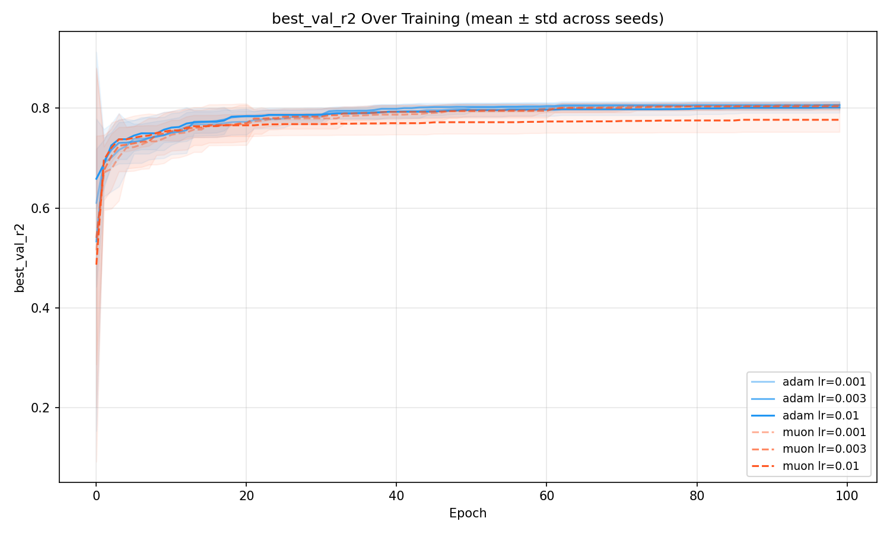
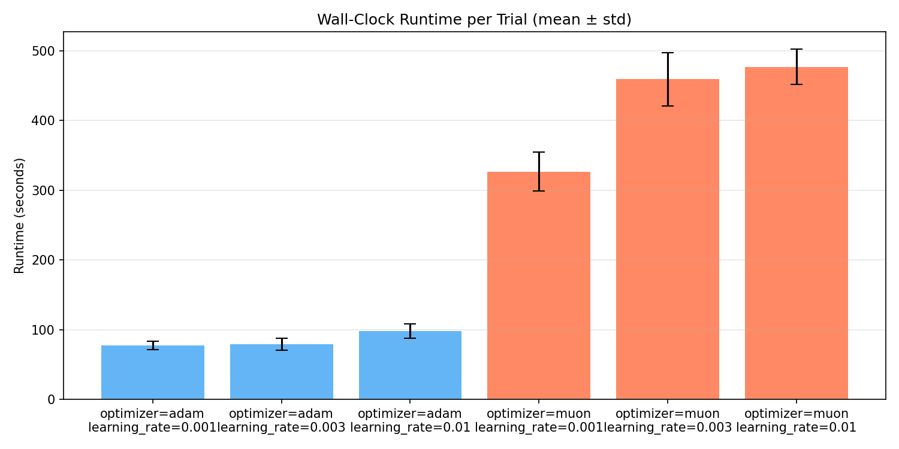
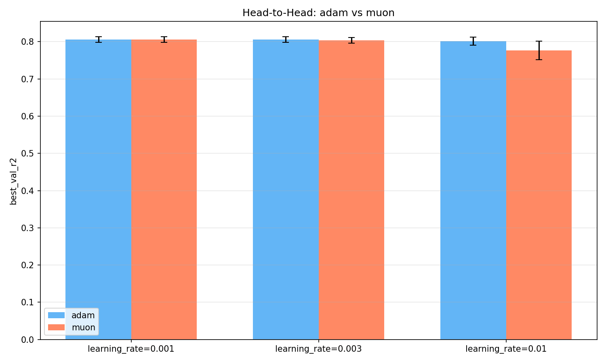

Muon vs Adam: An Optimizer Comparison on Tabular Regression
60 runs · 6 configurations · 10 seeds each — a controlled head-to-head
Introduction
Muon is a recently proposed optimizer that uses orthogonalized momentum updates on weight matrices. Instead of the element-wise adaptive learning rates that Adam computes, Muon applies Newton's method in the spectral domain of each weight matrix, effectively normalizing the update direction via an approximate matrix inverse square root. It was designed for large-scale language model pretraining, where it has shown promising results in faster convergence.
Adam needs no introduction—it is the default optimizer for most of deep learning, combining momentum with per-parameter adaptive learning rates. Any new optimizer must justify itself against Adam on practical grounds: does it train better, faster, or more reliably?
This experiment puts them head-to-head on a deliberately simple task: tabular regression on the California Housing dataset with a 4-layer MLP. This is not the domain Muon was designed for—which makes it a useful stress test. If Muon can match Adam here, it suggests broad applicability. If it can't, we can examine why and what trade-offs emerge.
Experimental Setup
Model
A 4-layer MLP with batch normalization: 8 → 256 → 128 → 64 → 1.
Each hidden layer uses BatchNorm followed by ReLU. The input dimension of 8 corresponds to the 8 features
in the California Housing dataset (median income, house age, average rooms, etc.).
Dataset
California Housing (scikit-learn): 20,640 samples of California census block groups, predicting
median house value. Split 80/20 for train/validation with per-seed random splits. Features are standardized
with StandardScaler (fit on train, applied to both).
Hyperparameter Grid
We swept over 2 optimizers (Adam, Muon) × 3 learning rates (0.001, 0.003, 0.01) × 10 random seeds (0–9), giving 60 total runs. All runs trained for 100 epochs with batch size 64 and MSE loss.
Muon's Hybrid Setup
A key implementation detail: Muon only operates on tensors with 2 or more dimensions (weight matrices).
For 1D parameters—biases and batch normalization parameters—a separate Adam optimizer handles updates
(with weight_decay=0.01). This is the standard recommended configuration. Adam, by contrast,
receives all parameters in a single optimizer with no weight decay.
Summary Results
| Configuration | Best Val R² | Val Loss | Runtime | Runs |
|---|---|---|---|---|
| Adam, lr=0.003 | 0.8062 ± 0.0078 | 0.501 | 79s | 10 |
| Adam, lr=0.001 | 0.8060 ± 0.0075 | 0.395 | 78s | 10 |
| Muon, lr=0.001 | 0.8059 ± 0.0076 | 0.342 | 327s | 10 |
| Muon, lr=0.003 | 0.8034 ± 0.0077 | 0.518 | 459s | 10 |
| Adam, lr=0.01 | 0.8015 ± 0.0106 | 0.437 | 98s | 10 |
| Muon, lr=0.01 | 0.7767 ± 0.0244 | 0.448 | 477s | 10 |
The top four configurations are separated by less than 0.003 in R²—a remarkably tight cluster. The story is not that one optimizer dominates overwhelmingly, but that Adam achieves comparable or better results at a fraction of the runtime. The gap between the two optimizers is learning-rate-dependent: nearly zero at lr=0.001, and widening as the learning rate increases.
Distribution of Results

This box plot reveals the stability story. Adam's two best configurations (lr=0.003 and lr=0.001) produce tight distributions with small interquartile ranges, meaning you can rely on getting consistent results regardless of random seed. Muon at lr=0.001 is similarly tight—and its median is essentially indistinguishable from Adam.
The outlier is Muon at lr=0.01: the widest box, the lowest median, and individual runs dipping below 0.72. This suggests Muon is significantly more sensitive to high learning rates on this architecture. Where Adam degrades gracefully at lr=0.01 (R² drops only 0.005 from its best), Muon degrades sharply (dropping 0.029).
Training Dynamics

The loss curves reveal the training behavior behind the final numbers. All configurations converge in training loss within the first 20–30 epochs. But the level they converge to differs: Adam configurations generally achieve lower training loss than their Muon counterparts at the same learning rate.
This is where it gets interesting. Despite Muon's higher training loss, its validation loss at lr=0.001 is actually the lowest of any configuration. This is a hallmark of implicit regularization—Muon doesn't fit the training data as aggressively, which translates to better generalization as measured by validation loss. The orthogonalization step constrains the weight updates in a way that acts like a regularizer.
Also notable: the shaded uncertainty bands for Muon configurations are wider, especially at higher learning rates. This confirms the stability finding from the box plots—Muon's training trajectories vary more across random seeds.
R² Convergence

The convergence curves show how quickly each configuration reaches its final performance. All configurations enter the R² > 0.75 range by epoch 20, but the fine-grained ranking takes another 40–60 epochs to stabilize.
At lr=0.001, the Adam and Muon curves are nearly perfectly overlapping—both converge at the same rate to the same level. The divergence only becomes visible at lr=0.003 (small gap) and lr=0.01 (large gap). This reinforces a key finding: the optimizer gap is entirely learning-rate-dependent. With proper tuning, Muon matches Adam's R² performance exactly.
The wider uncertainty bands for Muon at lr=0.01 confirm that its instability isn't just in the final metric—the entire training trajectory is more variable across seeds.
Runtime Cost

This is where Adam's practical advantage is most stark. Adam completes a full 100-epoch training run in under 2 minutes. Muon takes 5–8 minutes for the same workload—a 4–6× slowdown.
The overhead comes from Muon's orthogonalization step, which performs SVD-like operations on each weight
matrix at every update. On the CPU-only t3.medium instances used here, this is particularly
expensive. On GPU hardware with optimized linear algebra kernels, the relative overhead would likely
be smaller—but on CPU, it's substantial.
For this experiment, where the best Muon configuration matches Adam's R² exactly, the runtime cost is hard to justify. You'd need Muon to deliver meaningfully better results to warrant 4–6× longer training.
Head-to-Head by Learning Rate

This is perhaps the most informative plot. At lr=0.001, the two optimizers are statistically tied: 0.8060 vs 0.8059—a difference well within noise. At lr=0.003, Adam leads by 0.0028, a small but consistent gap. At lr=0.01, the gap explodes to 0.0248, with Muon clearly struggling.
The pattern is clear: Muon needs lower learning rates than Adam for stable convergence on this architecture. This makes sense given Muon's update mechanism—the orthogonalized momentum already imposes a form of update normalization, so pairing it with an aggressive learning rate leads to overshooting. Adam's per-element adaptivity is more forgiving of higher learning rates.
An Interesting Anomaly
Muon at lr=0.001 achieves the lowest validation loss (0.342) of any configuration—yet its R² (0.8059) is not the highest. Adam at lr=0.003 has a higher validation loss (0.501) but a higher R² (0.8062). How can a model with lower average error explain less variance?
This apparent contradiction arises because MSE loss and R² measure slightly different things. Validation loss (MSE) measures the average squared prediction error. R² measures the fraction of variance in the target explained by the model, normalized by the total variance of the target. When the train/val split changes across seeds, the total variance of the validation set changes too, making R² sensitive to the specific split in a way that raw MSE is not.
More interestingly, this gap may reflect a genuine difference in what the optimizers learn. Muon's solution appears to be better calibrated on average (lower MSE) but slightly less discriminative at the extremes (lower R²). The orthogonalization may smooth out the learned function, reducing outlier errors at the cost of slightly less sensitivity to high-variance data points.
This is a genuinely interesting finding that warrants further investigation on larger-scale tasks where calibration vs. discrimination trade-offs matter more.
Conclusions
Adam is the clear practical winner for this task. It matches or exceeds Muon's R² at every learning rate, trains 4–6× faster, and is more stable across random seeds.
Muon is not without merit. At low learning rates, it matches Adam's R² exactly while achieving lower validation loss—suggesting a better-calibrated solution. It also shows signs of implicit regularization: higher training loss but lower validation loss, a pattern associated with better generalization. These properties could become more significant on harder tasks where overfitting is the primary concern.
Limitations
This is a single tabular dataset (20K samples) with a small MLP (under 100K parameters), trained on CPU. Muon was designed for large-scale language model pretraining with billions of parameters on GPU clusters. These results say nothing about Muon's performance in its intended domain—they only test whether its benefits generalize to a simpler regime. The answer is: not yet clearly, but with hints of interesting properties.
What's Next
To give Muon a fairer evaluation: test on GPU hardware (where its orthogonalization overhead is relatively smaller), larger models (where spectral normalization matters more), and language modeling tasks (its intended use case). The implicit regularization finding is worth pursuing on tasks where train/val gaps are larger.